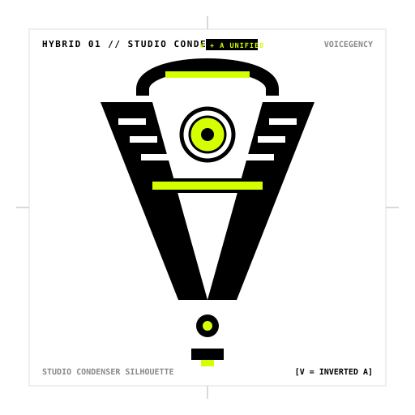
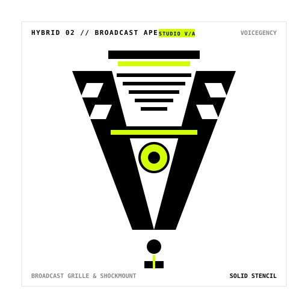
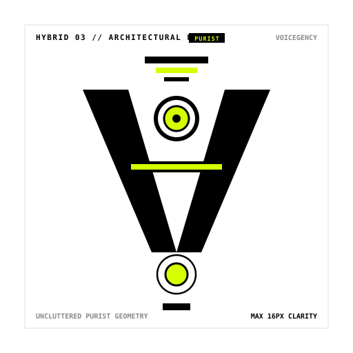

PHYSICAL MICROPHONE ANATOMY & LOGOS


The 'V' Chassis
The tapering solid metal body converging from the wide mesh capsule down to the XLR base.
The 'A' Crossbar
The heavy horizontal shock-mount clamp ring wrapping around the microphone midsection.
The Golden Node
The circular golden dual-diaphragm capsule visible right inside the acoustic head grille.


Acoustic Louvers
Horizontal acoustic ventilation slots cut directly into the upper chamber to reduce proximity effect.
The Shock Yoke
The heavy U-shaped mounting yoke framing the outer body and clamping at the midsection.
Heavy Taper
Solid industrial broadcast casing tapering down into the reinforced XLR ground mount.


Geometric Purity
The pill-shaped capsule dome with acoustic stepped vents and streamlined monolithic taper.
The Diaphragm Core
Clean centered circular acoustic pickup node sitting directly on the structural 'A' crossbar.
16px Menu Bar Clarity
Uncluttered silhouette designed for razor-sharp legibility on screens, hardware badges, and print.